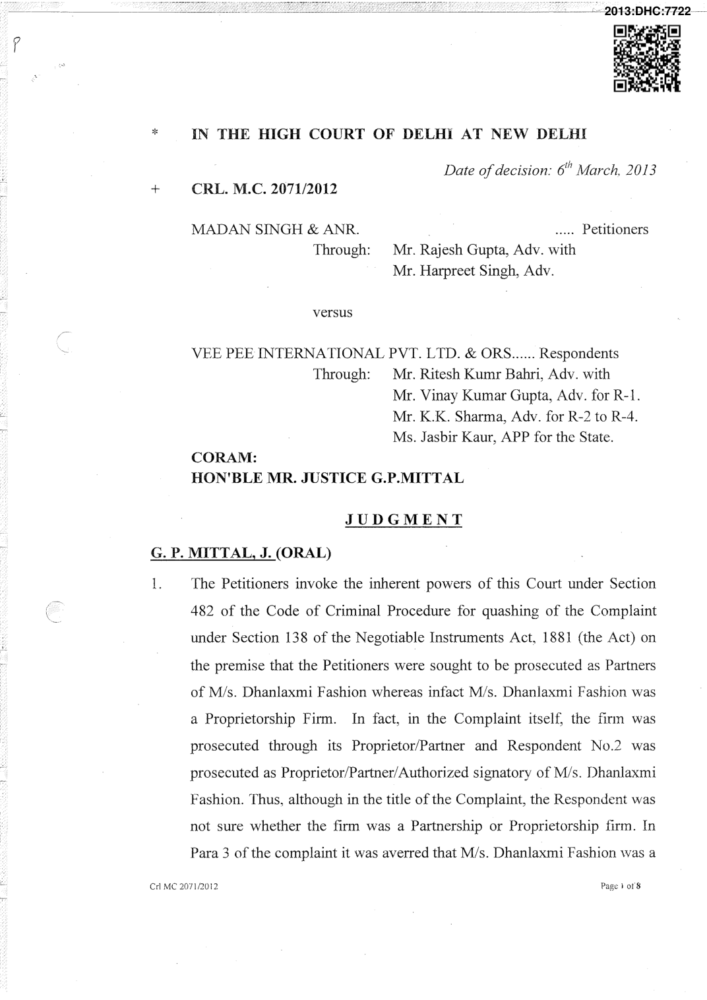

g
Partnership firm and accused Nos. 2 to 5 were its partners and were in charge of and responsible for the conduct of the day to day business of the firm. It was further stated that accused No.2 (not a Petitioner before this Court) was the signatory of the cheque in question and was also, therefore, liable to be prosecuted. Learned counsel for the Petitioners referring to the reply to the notice under Section 251 Cr.P.C. served upon Respondent No.3, stated that M/s. Dhanlaxmi Fashion was a Proprietorship firm and his father Madan Singh and his younger brother Rajender Rajpurohit had nothing to do with the same and further that accused Bharat who was also prosecuted as partner of M/s. Dhanlaxmi Fashion was merely an employee who had left the job.
- The learned counsel for the Respondents urges that a host of documents were placed before the Trial Court to prove that M/s. Dhanlaxmi Fashion was a proprietorship firm but the same were not taken into consideration. The learned counsel refers to a letter dated 26.10.2010 written by Respondent Mahender Singh Rajpurohit as Proprietor of M/s. Dhanlaxmi Fashion to his Banker, HDFC Bank, Johri Bazar, Jaipur whereby the payment of the cheque in question was stopped .. He has placed on record a copy of the notice given by M/s. Dhanlaxmi Fashion to the Inspector of Shops and Commercial Establishments, whereby the Govt. department was notified that the shop will close on Sunday; the registration certificate of the shop M/s. Dhanlaxmi Fashion with the Inspector Shops and Commercial Establishments and the registration certificate issued to M/s. Dhanlaxmi Fashion by Commercial Taxes Officer, Division Kar Bhawan, Jahalana, Jaipur. In all these documents M/s. Dhanlaxmi Fashion has been described as a proprietorship firm.
Page 2 of8 Crl MC 2071/2012
- Learned counsel for the Respondents opposes the Petition for quashing the complaint. Relying on Rajesh Agarwal & Ors. v. State & Ors. 2010
- JCC (NJ) 273; and Krishna Murari La! v IFCI Factors Ltd 2013 (1) JCC (NJ) 1 he urges that at this stage the averments made in the Complaint have to be accepted on its face value and the Petitioners' defence, if any, cannot be considered at this stage.
- Relying on Bhushan Kumar & Anr. v. State (NCT of Delhi) & Anr., Criminal Appeal No.612/2012 decide on04.04.2012, the learned counsel for the Respondents submits that while taking cognizance, a Magistrate is not expected to give any explicit reason. Referring to State of Orissa v. Debendra Nath Pandhi, Criminal Appeal No.497/2001 decided on 29.11.2004, the learned counsel argues that the documents relied upon by the accused cannot be taken into consideration at the time of framing of the charge.
- In the case of Rajesh Agarwal, a Coordinate Bench of this Court held that the provisions of summary trial enable the Respondent to lead defence evidence by way of an Affidavit and other documents, thus an accused who considers that he has a tenable defence and the case against him was not maintainable, he can enter his plea on the very first day of his appearance and file an Affidavit in his defence. It is also true that a Magistrate is not required to record detailed reasons while issuing process. It is also true as held in Debendra Nath Pandhi that defence of an accused is not to be taken into consideration at the time of framing of the charge but at the same time when there are documents of sterling character from an authentic source like a Govt. department whose genuineness is not in dispute the same can be considered by the Court Crl MC 2071/2012 Page 3 of8 tO particularly in a summons trial and the proceedings can be stayed as provide under Section 258 of the Code.
- In a latest judgment of the Supreme Court in Rajiv Thapar & Ors. v. Madan Lal kapoor, Criminal Appeal No.174/2013 decided on 23.01.2013 the Supreme Court after referring to the judgment in Debendra Nath Pandhi (relied upon by the learned counsel for Respondent No.1) observed that in its inherent jurisdiction under Section 482 of the Code the High Court can be persuaded to quash such criminal proceedings where the material produced by the accused is such that would lead to the conclusion that his defence is based on sound, reasonable and indubitable facts; material produced is such, as would rule out and displace the assertions contained in the charges leveled against the accused. Para 22 of the report is extracted hereunder:- "22. The issue being examined in the instant case is the jurisdiction of the High Court under Section 482 of the Cr.P. C., if it chooses to quash the initiation of the prosecution against an accused, at the stage of issuing process, or at the stage of committal, or even at the stage of framing of charges. These are all stages before the commencement of the actual trial. The same parameters would naturally be available for later stages as well. The power vested in the High Court under Section 482 of the Cr.P. C., at the stages referred to hereinabove, would have far reaching consequences, inasmuch as, it would negate the prosecution's/complainant's case without allowing the prosecution/complainant to lead evidence. Such a determination must always be rendered with caution, care and circumspection. To invoke its inherent jurisdiction under Section 482 of the Cr.P. C. the High Court has to be fully satisfied, that the material produced by the accused is such, that would lead to the conclusion, that his/their defence is based on sound, reasonable, and indubitable facts,· the material produced is such, as would rule out and displace the assertions contained in the charges levelled against the accused; and the material produced is such, as would clearly Page 4 of8 Crl MC 207!/2012 l) reject and overrule the veracity of the allegations contained in the accusations levelled by the prosecution/complainant It should be sufficient to rule out, reject and discard the accusations levelled by the prosecution/complainant, without the necessity of recording any evidence. For this the material relied upon by the defence should not have been refuted, or alternatively, cannot be justifiably refuted, being material of sterling and impeccable quality. The material relied upon by the accused should be such, as would persuade a reasonable person to dismiss and condemn the actual basis of the accusations as false. In such a situation, the judicial conscience of the High Court would persuade it to exercise its '..:. power under Section 482 of the Cr.P.C. to quash such criminal proceedings, for that would prevent abuse of process of the court, and secure the ends ofjustice. "
- Turning to the facts of the instance case, I may mention that the complaint under Section 13 8 of the Act was preferred on 31.01.2011. Respondent No. I was either not sure whether M/s. Dhanlaxmi Fashion was a proprietorship firm or was a partnership firm or he intentionally tried to create confusion by mentioning M/s. Dhanlaxmi Fashion as a proprietorship/partnership firm. Thus, as stated earlier in the title of the complaint he mentioned M/s. Dhanlaxmi Fashion through its Proprietor/Partner. The genuineness of the documents filed by · the Petitioners, particularly, the documents issued by Shops and Commercial Establishments Department and Commercial Tax Officers, J aipur were not disputed by the Respondents.
- In Shri Raj Chawla v. Securities & Exchange Board of India (SEBI) & Anr. Crl.MC.3937/2009 decided on 12.01.2010, a Coordinate Bench of this Court relying on Form 32 deposited with the Registrar of Companies (ROC) showing that the Director who was prosecuted for being incharge of and responsible for the conduct of the business of the company would be entitled to be discharged, if Form 32 shows that he ceased to be the Crl MC 2071/2012 Page 5 of8 r"L Director of the company on the date the cheque issued by the drawer was payable. Relying on the judgment of the Supreme Court in All Cargo Movers (I) Pvt. Ltd v. Dhanesh Badarmal Jain & Anr. (2007) 12 SCALE 39; V Y Jose & Anr. v. State of Gujarat & Anr. 2009 1 AD (Cr.) (SC) 567; and Minakshi Bala v. Sudhir Kumar (1994) 4 SCC 142, the learned Single Judge observed as under:-
- In All Caroga Movers (I) Pvt. Ltd Vs. Dhanesh Badarmal Jain & Anr. (2007) 12 SCALE 39, the Hon 'ble Supreme Court observed as under:- "It is one thing to say that the Court at this juncture would not consider the defence of the accused but it is another thing to say that for exercising the inherent jurisdiction of this Court, it is impermissible also to look to the admitted documents. " In V Y Jose & Anr. Vs. State of Gujarat & Anr. 2009 I AD (Cr.)
- C) 567, the Hon 'ble Supreme Court has observed as under:- "It is one thing to say that a case has been made out for trial and as such the criminal proceedings should not be quashed but it is another thing to scry that a person should undergo a criminal trial despite the fact that no case has been made out at all. " In Minakshi Bala v. Sudhir Kumar (1 994) 4 SCC 142, the Hon 'ble Supreme Court, inter alia, observed as under in para 7 of the
judgment:
"7. If charges are framed in accordance with Section 240 Cr.P. C. on a finding that a prima facie case has been made ' out-as has been done · in the instant case-the person arraigned mcry, if he feels aggrieved, invoke the revisional jurisdiction of the High Court or the Sessions Judge to contend that the charge-sheet submitted under Section 173 Cr.P. C. and documents sent with it did not disclose any ground to presume that he had committed any offence for Crl MC 207l/2012 Page 6 of8 1:? which he is charged and the revisional court if so satisfied can quash the charges framed against him. To put it differently, once charges are famed under Section 240 Cr.P. C. the High Court in its revisional jurisdiction would not be justified in relying upon documents other than those referred to in Section 239 and 240 Cr.P. C.; nor would it be justified in invoking its inherent jurisdiction under Section 482 Cr.P. C. to quash the same except in those rare cases where forensic exigencies and formidable compulsions justifY such a course. We hasten to add even in such exceptional cases the High Court can look into only those documents which are unimpeachable and can be legally translated into relevant evidence." The above-referred observations in the Hon 'ble Supreme Court in the case of Minakshi Bala (supra) were considered by the Hon 'ble Court in State of Orissa vs. Debendra Nath Padhi (2005) I SCC 568 and the Hon 'ble Court, inter alia, observed as under: "It is evident from the above that this Court was considering the rare and exceptional cases where the High Court may consider unimpeachable evidence while exercising jurisdiction for quashing under Section 482 of the Code. In the present case, however, the question involved is not about the exercise of jurisdiction under Section 482 of the Code where alongwith the petition the accused 1nay file unimpeachable evidence of sterling quality and on that basis seek quashing, but is about the right claimed by the accused to produce material at the stage of framing of charge. " Thus, there can be no valid legal objection to considering the certified copy of Form-32 issued by Registrar of Companies correctness of which is unimpeachable and which can be otherwise be read in evidence without any formal proof
- A criminal trial is a serious matter, having grave inzplications for an accused, who not only has to engage a lawyer and incur substantial expenditure on defending him, but, has also to undergo the ordeal of appearing in the Court on eve1y date of hearing, sacrificing all his engagements fixed for that day. If he is in business or profession, he has to do it at the cost of affecting his Page 7 of8 Crl MC 2071/2012 business or profession, as the case may be. If he is in service. he has to take leave on every date of hearing. Besides inconvenience and expenditure involved, a person facing criminal trial undergoes constant anxiety and mental agony, as the sword of possible conviction keeps hanging on his head throughout the trial. Therefore, when there is a reasonably certainty that the trial is not going to result in conviction, it would be neither fair nor reasonable to allow it to proceed against a person such as the petitioner in this case. "
- Keeping in view the fact that Respondent No.1 himself is wavering whether M/s. Dhanlaxmi Fashion was a Proprietorship or a partnership firm and in view of the documents issued by Govt. Deptt. as stated earlier, it is evident that M/s. Dhanlaxmi Fashion was a proprietorship firm whereof Mahender Singh Rajpurohit was the proprietor. Thus, the filing of the Complaint under Section 13 8 with the aid of Section 141 of the Act on the premise that the Petitioners were the partners of M/s. Dhanlaxmi Fashion was not permissible.
- Thus, the orders dated 06.03.2012 and 26.03.2012 passed in Complaint Case Nos.l26/2011 and 127/2011 and the proceedings arising therefrom as against the Petitioners are quashed.
- Pending Applications also stand disposed of.
~~ G.P. MITTAL, J. MARCH 06, 2013 vk Crl MC 2071/2012 Page 8 of8